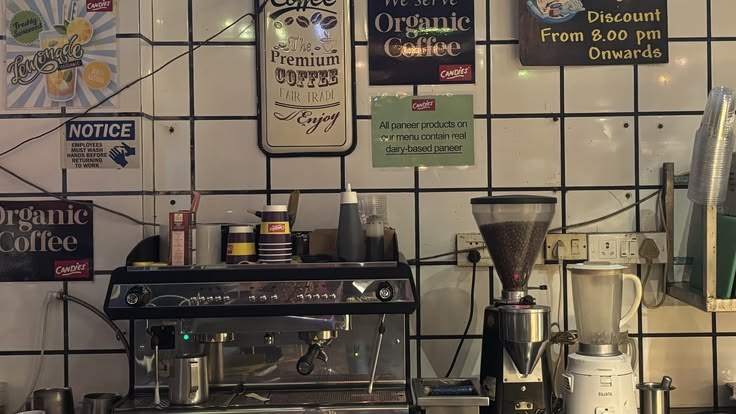

Visi Kami
Menjadi brand minuman yang dikenal melalui pilihan produk yang beragam, identitas yang kuat, dan pengalaman yang dekat dengan keseharian pelanggan.
Berawal dari kecintaan terhadap minuman, Kopi Nusa hadir sebagai konsep UMKM yang membawa rasa, kenyamanan, dan cerita dalam setiap sajian.
Kopi Nusa dibangun dari gagasan sederhana bahwa minuman dapat menjadi teman dalam berbagai momen. Secangkir kopi bisa menemani pagi yang sibuk, waktu belajar, maupun obrolan bersama teman.
Karena itu, Kopi Nusa menghadirkan pilihan minuman yang beragam, mulai dari kopi, frappe, milk tea, cokelat, hingga teh dengan rasa buah.
Melalui tagline “Teman Ngopi di Setiap Cerita”, Kopi Nusa ingin menghadirkan konsep minuman yang dekat dengan keseharian dan mudah dinikmati.
Jelajahi Produk

Kopi Nusa merupakan konsep UMKM minuman kekinian yang menawarkan pilihan minuman untuk berbagai selera. Setiap kategori memiliki karakter rasa yang berbeda agar pelanggan dapat menemukan minuman yang sesuai dengan keinginannya.
Kami mengutamakan variasi produk, penyajian informasi yang jelas, serta harga yang mudah dipahami oleh pelanggan.
Kopi Nusa juga dirancang sebagai brand yang hangat, sederhana, dan mudah dikenali melalui identitas visual bernuansa krem dan cokelat.
Prinsip yang menjadi dasar konsep Kopi Nusa dalam menghadirkan pengalaman menikmati minuman.
Menjadi brand minuman yang dikenal melalui pilihan produk yang beragam, identitas yang kuat, dan pengalaman yang dekat dengan keseharian pelanggan.
Menghadirkan pilihan kopi dan non-kopi, menyajikan informasi produk secara jelas, serta membangun identitas brand yang hangat dan mudah dikenali.
Mengutamakan variasi rasa, kemudahan menemukan menu, tampilan yang nyaman, dan pengalaman pelanggan yang sederhana serta menyenangkan.
Beragam kategori minuman yang dapat dipilih sesuai suasana dan selera.
Mulai dari Kopi Nusa Aren, Nusa Latte, hingga Nusa Americano untuk pencinta kopi.
Pilihan frappe, milk tea, cokelat, dan teh untuk berbagai selera.
Informasi kategori, nama produk, dan harga disusun agar pengunjung mudah memilih menu.
Kenali pilihan minuman yang tersedia di Kopi Nusa.